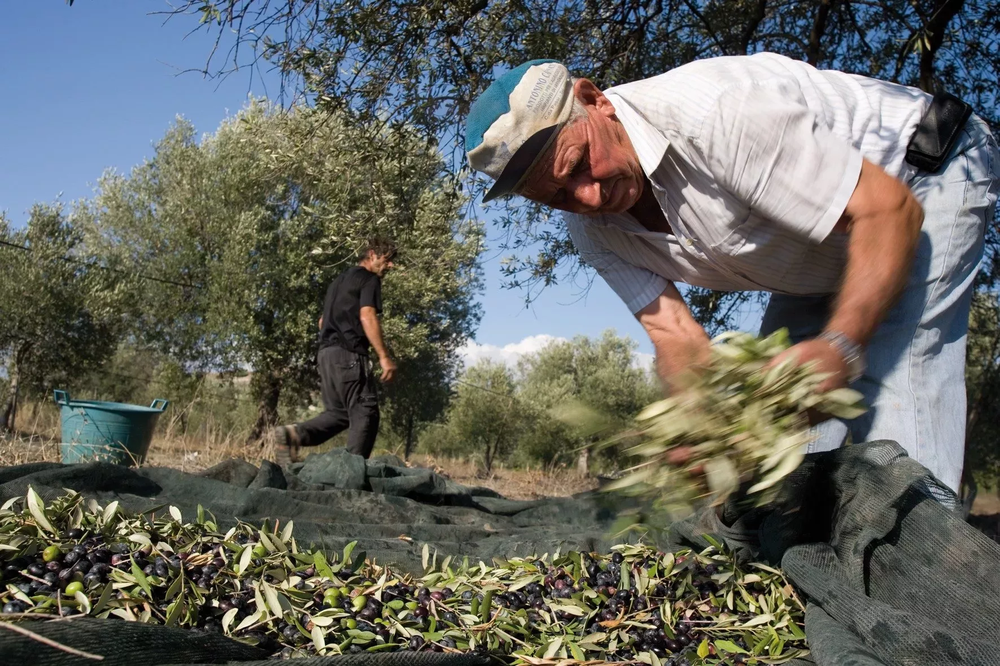
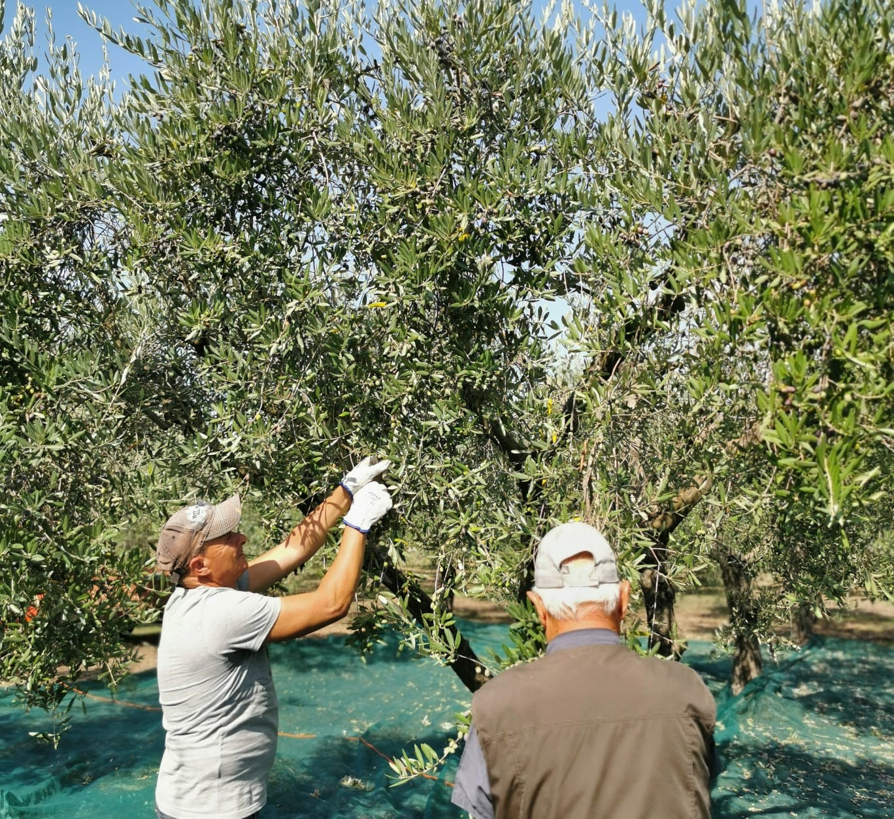
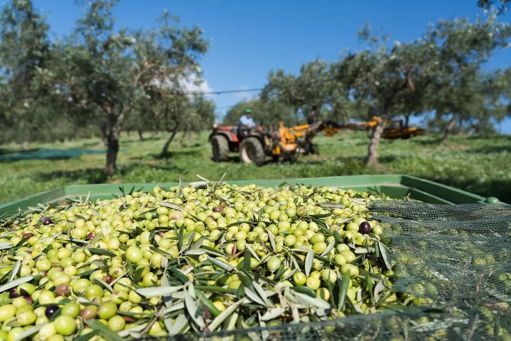
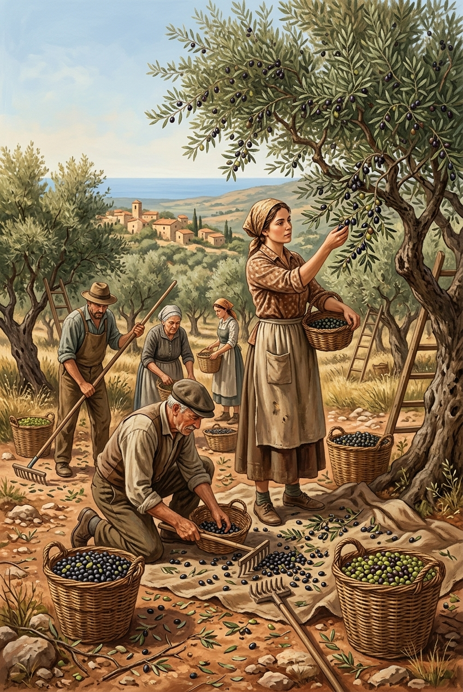
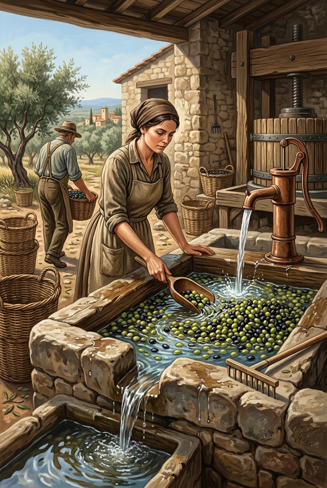
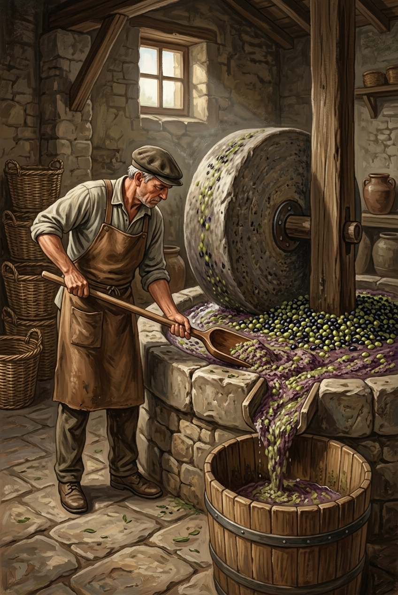
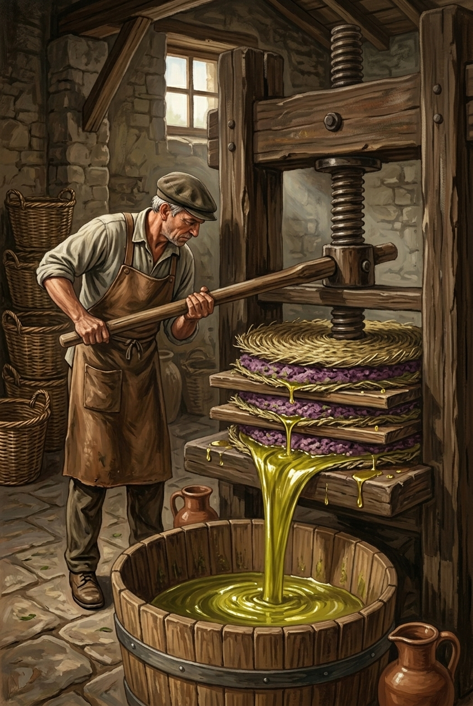
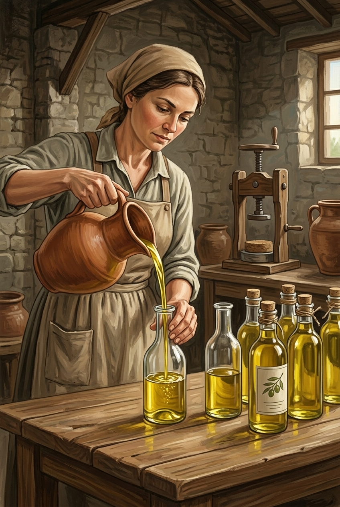

Oliviers centenaires, récolte manuelle traditionnelle.

Agriculture biologique certifiée depuis 2010.

Pressage à froid dans les 4h après récolte.
ISO 22000 — Management sécurité alimentaire.
Certification Bio — UE N° FR-BIO-01.
Certifié Halal ONSSA Maroc

1
2
3
4
5